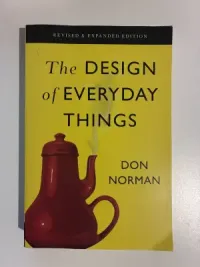

Books
Invisible Cities, Italo Calvino
In Invisible Cities, Marco Polo conjures up cities of magical times for his host, the Chinese ruler Kublai Khan, but gradually it becomes clear that he is actually describing one city: Venice. Calvino's metafictional travel guide is a captivating meditation on culture, language, time, memory and the nature of human experience.
Too Loud A Solitude, Bhoumil Hrabal
For thirty-three years now I've been in wastepaper, and it's my love story. For thirty-five years I've been compacting wastepaper and books, smearing myself with letters until I've come to look like my encyclopedias - and a good three tons of them I've compacted over the years...
The Wind Up Bird Chronicle, Haruki Murakami
This wind-up bird is there every morning in the trees of the neighbourhood to wind things up. Us, our quiet little world, everything.
The Design of Everyday Things, Don Norman

When The Design of Everyday Things was published in 1988, cognitive scientist Don Norman provocatively proposed that the fault lies not in ourselves but in design that ignores the needs and psychology of people.
Make Something Wonderful, Steve Jobs
There's lots of ways to be, as a person. And some people express their deep appreciation in different ways. But one of the ways that I believe people express their appreciation to the rest of humanity is to make something wonderful and put it out there.
Walt Whitman, Ellman Crasnow
Why should I be afraid to trust myself to you? I am not afraid, I have been well brought forward by you, I love the rich running day, but I do not desert her in whom I lay so long, I know not how I came of you and I know not where I go with you but I know I came well and shall go well.